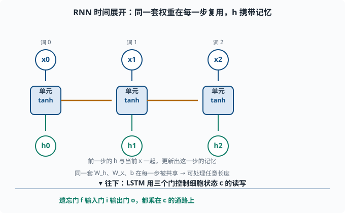

循环神经网络（RNN/LSTM）：为序列而生，LLM 的亲爷爷
目标：理解循环网络如何处理"有顺序的数据"，明白 LSTM 如何用门控对抗梯度消失。读完这一页，你能解释为什么 RNN 天然适合序列，也知道它最终为何被注意力取代——这正是第五章的伏笔。
为什么普通网络处理不了序列
前面所有网络（全连接、CNN）都假设输入是定长、无序的：你把像素顺序打乱，图片的语义就没了，但网络并不知道"顺序"这回事。
可很多数据天生是有序序列：
文本：每个词按顺序出现，顺序决定含义
语音：音频帧按时间排列
时间序列：股价、传感器读数
RNN（Recurrent Neural Network，循环神经网络，"循环"指同一单元的输出会绕回自己作为下一步输入）的设计目标就是：显式地让网络记住"读过的内容"，按顺序处理输入。
RNN 的核心：一个带"记忆"的单元，逐时间步重复使用
RNN 的核心想法极其简单：同一个神经元结构在时间轴上被反复使用，每一步输入当前数据 x_t 和上一步的隐藏状态 h_{t-1}（hidden state——网络内部自己维护的"至今读到了什么"的摘要向量），输出新的隐藏状态 h_t：
h_t = tanh(W·[h_{t-1}, x_t] 或 W_h·h_{t-1} + W_x·x_t + b)
h_t 就是这个时间步的"记忆摘要"，它携带了截至当前步的所有信息。处理整个序列时，网络一个词一个词地读取，不断更新这个记忆：
h_0 → h_1 → h_2 → ... → h_T

上方把"循环"铺平来看：同一套单元在时间轴上重复，每一步接收当前的输入 x_t 和上一步的隐藏状态 h_{t-1}，输出新的 h_t。水平橙色箭头表示"上一步的记忆传给下一步"，这就是记忆的载体。下方是 LSTM 的升级思路：用遗忘、输入、输出三个门去控制细胞状态 c 该忘什么、记什么、输出什么，让旧信息能跨很长的序列持续留存。
关键点：每一步使用同一套权重 W_h、W_x、b（参数共享），所以 RNN 可以处理任意长度的序列。这有点像 CNN 的参数共享——CNN 在空间上共享，RNN 在时间上共享。
两种读法
- 多到一（sequence → one）：只看最后一步的
h_T做预测，例如"整句话是正面还是负面"。 - 多到多（sequence → sequence）：每一步都输出一个东西，例如"每个词的词性标签"，或机器翻译的 decoder（每一步生成一个词）。
直接手算一个一步 RNN
为了真正"摸到"这种重复结构，手算一个单时间步：
假设隐藏维度 = 2
W_h = [[0.5, -0.2], [0.6, 0.1]]
W_x = [[0.3, 1.0], [-0.4, 0.7]]
b = [0.1, -0.2]
上一步隐藏状态 h_{t-1} = [1, 0.5]，当前输入 x_t = [2, -1]：
W_h·h_{t-1} = [[0.5, -0.2],[0.6, 0.1]]·[1, 0.5]
= [0.5*1 + (-0.2)*0.5, 0.6*1 + 0.1*0.5] = [0.4, 0.65]
W_x·x_t = [[0.3, 1.0],[-0.4, 0.7]]·[2, -1]
= [0.3*2 + 1.0*(-1), -0.4*2 + 0.7*(-1)] = [-0.4, -1.5]
总和 + b = [0.4 + (-0.4) + 0.1, 0.65 + (-1.5) + (-0.2)]
= [0.1, -1.05]
h_t = tanh([0.1, -1.05]) ≈ [0.0997, -0.7818]
注意：h_t 同时受"过去记忆 h_{t-1}"和"当前输入 x_t"影响。同一个公式在下一个时间步重复，就形成"记住前面、结合当下"的能力。
RNN 的三座大山：长期依赖、梯度消失/爆炸、慢
RNN 原理漂亮，但实践有几处硬伤：
- 长期依赖（long-term dependency）困难：信息要跨越很多时间步。第 1 个词要影响第 50 个词的输出，中间要经过 49 次非线性变换，梯度早就消失了。
- 梯度爆炸/消失：在时间轴上展开后，RNN 相当于一个"共享权重的深网络"，梯度在时间上反复相乘。乘的数大于 1 就爆炸（需梯度裁剪，04-06），小于 1 就消失（长时间步学不到）。
- 训练慢：时间步必须串行处理，后一步依赖前一步的隐藏状态，没法像 CNN 那样并行。这在大序列上非常致命。
最后一条（串行）是 RNN 被 Transformer 取代的决定性原因之一，第五章会细说。
LSTM：用"门"来选择性记忆与遗忘
LSTM（Long Short-Term Memory，长短期记忆）针对梯度消失设计，引入了细胞状态（cell state） c_t 和三个"门"：
- 遗忘门：决定"过去的记忆该忘多少"。
- 输入门：决定"新信息该记住多少"。
- 输出门：决定"把记忆的哪部分输出给 h_t"。
每个门都是一个「sigmoid 再乘」的机制（门 = 一个 0 到 1 之间的开关比例，乘到某路信号上决定放行多少）。sigmoid 输出 0-1，表示"放行比例"：
0 = 完全关闭（忘掉/不写入/不输出）
1 = 完全打开（保留/写入/输出）
粗略的结构：
候选 c_tilde = tanh(...) 新的候选记忆
遗忘 f_t = σ(...) 过去记忆保留比例
输入 i_t = σ(...) 新记忆写入比例
细胞 c_t = f_t ⊙ c_{t-1} + i_t ⊙ c_tilde 线性更新记忆
输出 o_t = σ(...) 输出比例
h_t = o_t ⊙ tanh(c_t)
关键是 c_t = f_t⊙c_{t-1} + i_t⊙c_tilde：细胞状态是一条"线性"通路，遗忘门决定保留多少旧记忆。正因为这条通路几乎线性，旧信息能"涓涓细流"般持续留存在很长的序列里，梯度不会在时间上被非线性地反复压扁——这极大缓解了长期依赖和梯度消失。
GRU：LSTM 的轻量版
**GRU（Gated Recurrent Unit）**把 LSTM 简化：只有两个门（更新门、重置门），没有单独的细胞状态。效果接近 LSTM，但参数更少、更快。工程上常作为 RNN 家族的首选入门。
RNN 家族对比
| 模型 | 记忆机制 | 门 | 长期能力 | 备注 |
|---|---|---|---|---|
| 朴素 RNN | 隐藏状态 h | 无 | 差（梯度消失） | 概念基础 |
| LSTM | h + 细胞状态 c | 遗忘/输入/输出 | 好（线性记忆通路） | 经典主力 |
| GRU | 简化隐藏状态 | 更新/重置 | 好（参数更少） | 轻量替代 |
用 PyTorch 搭一个句子分类 RNN
import torch
import torch.nn as nn
# 简单"最后一步输出做分类"的 RNN
class SentimentRNN(nn.Module):
def __init__(self, vocab, embed_dim=64, hidden=32, num_classes=2):
super().__init__()
self.embed = nn.Embedding(vocab, embed_dim)
self.rnn = nn.GRU(embed_dim, hidden, batch_first=True)
self.fc = nn.Linear(hidden, num_classes)
def forward(self, x): # x: (batch, seq_len) 词索引
e = self.embed(x) # (batch, seq_len, embed_dim)
out, h = self.rnn(e) # out: 每步输出; h: 最后一步隐藏
last = h[-1] # 取最后一个时间步的隐藏
return self.fc(last) # (batch, num_classes)
流程是：每个词索引 → 查嵌入得到向量 → 喂给 GRU 按顺序处理 → 取最后一步隐藏做分类。这就是一个"读完整个句子再表态"的序列模型。
从 RNN 到 Transformer：为什么被取代
RNN 的"长依赖难 + 必须串行"，在需要长文本、超大模型的时代越来越难以承受。注意力机制（05）给出两条致命优势：
1. 任一位置能直接看到"任意遥远"的其他位置，没有长依赖问题
2. 所有位置并行计算，不需要逐时间步串行
所以现代 NLP 和 LLM 几乎不再用 RNN 做骨干。理解 RNN 的价值在于：
- 它是"序列=记忆+顺序处理"这个心智模型的来源。
- LSTM 的"门控+线性记忆通路"思想至今影响很多架构设计。
- 读旧论文、理解历史演进必需。
思考题
- RNN 的参数为什么可以在不同时间步共享？这和 CNN 的共享有何类比？
- 一步 RNN 的
h_t依赖于哪些量？为什么说它"记住过去、结合当下"？ - 朴素 RNN 处理长序列会遇到哪两个核心问题？
- LSTM 用"三个门 + 细胞状态"解决了 RNN 的什么问题？细胞状态的"线性通路"为何关键？
- GRU 相比 LSTM 简化了什么？
参考答案
- RNN 把同一套权重在每个时间步复用，因为它处理的是"同一种顺序变换"——每个时间步的更新规律相同。这类似 CNN 在空间上共享权重的思路：CNN 空间共享、RNN 时间共享，都通过复用一套参数降参量并捕捉对应结构。
h_t依赖当前输入x_t和上一步隐藏状态h_{t-1}（经 W_h、W_x 和 tanh）。h_{t-1}携带了此前所有读到内容的摘要，所以h_t兼具"记住前面 + 结合这一步"，正体现序列建模。- 长期依赖困难（早先信息跨大量时间步难以保留到下）和梯度爆炸/消失（时间轴展开后梯度反复相乘，>1 爆炸、<1 消失）。串行计算导致的训练慢是另一工程问题。
- LSTM 用遗忘/输入/输出门控制记忆写入与读取，引入近乎线性的细胞状态通路
c_t = f⊙c_{t-1} + i⊙c_tilde，让旧信息能跨越很长的序列持续留存，缓解梯度消失和长期依赖。 - GRU 只有更新门和重置门两个门，没有单独的细胞状态（隐藏状态直接承担记忆），参数更少、计算更快，长期记忆能力仍较好，常在资源敏感场景当首选。
下一步
- 想看清"为什么序列实现要转向注意力/并行" → 05 NLP 与 Transformer。
- 想回顾与 LSTM 门控同源的正则/稳定性手段 → 04-06 训练技巧。
- 想把序列模型放到语言建模的大背景下 → 06 LLM 原理。